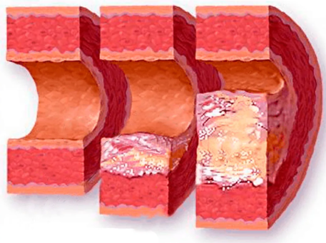
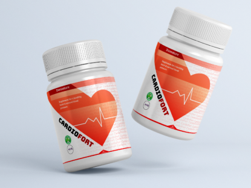
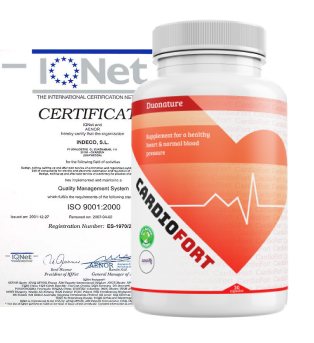

Entrevista
El profesor Miguel Rabelino celebró recientemente su 90 cumpleaños. A pesar de su venerable edad, Miguel se siente muy bien y todavía acepta pacientes para compartir con ellos el secreto de la longevidad y salud.
Ministerio de Salud Colombia
@h_сolombia
Queremos felicitar al destacado profesor, distinguido neurólogo Miguel Rabelino en su cumpleaños
#FelizCumpleaños
Gracias por su excelente trabajo y abnegación. Gran parte de nuestra investigación se basa en sus conclusiones.
1349
328
El profesor asegura que los vasos sanguíneos saludables posibilitan la longevidad. Si Si están en orden, entonces puedes vivir más de 100 años, sintiéndote genial.
Logramos reunirnos con el profesor Rabelino y aprender de él cómo mantener la salud vascular hasta la vejez.
-Sr. Rabelino, ¿por qué cree que los vasos sanguíneos sanos son la garantía para la longevidad?
- El hecho es que la salud de absolutamente todos los órganos de nuestro cuerpo depende de un buen suministro de sangre. Nuestro cerebro y todos los demás sistemas.
Los vasos son responsables del suministro de oxígeno en órganos y tejidos. Podemos decir que incluso nuestro rostro depende del tipo de suministro de sangre que tengamos. Mientras somos jóvenes, nuestros vasos y capilares son "nuevos". Imagínese tuberías nuevas. No se atascan con nada, elásticos, limpios, lo que asegura el máximo riego sanguíneo.
Comienzan a deteriorarse con la edad. Los alimentos grasos nocivos, el tabaquismo, el alcohol contaminan literalmente nuestros vasos sanguíneos, pierden su elasticidad y su luz se hace más pequeña y la sangre se vuelve más sucia, como el agua en tuberías oxidadas.

Vasos limpios y sucios. A medida que el cuerpo envejece, la luz de los vasos se llena y se altera el flujo sanguíneo. Este proceso comienza a ocurrir a la edad de 35-40 años.
-Doctor, si lleva un estilo de vida saludable, ¿es posible mantener saludables los vasos sanguíneos?
- En efecto,el estilo de vida afecta fuertemente a los vasos sanguíneos.
No los arruines con comida chatarra y alcohol. Pero aquí hay varios puntos. En primer lugar, además de los malos hábitos, también existen procesos naturales de depósito de lípidos. No importa cuánto intente evitar esto, es poco probable que tenga éxito. Y en segundo lugar, no todos estamos libres de pecado. Aquí comí comida grasosa, aquí me quedé en el sofá en lugar del gimnasio. Todo esto afecta claramente a nuestros vasos. Acumulan grasas y lípidos y se forman placas de colesterol. Como resultado, tenemos hipertensión (la principal causa de hipertensión son los vasos sanguíneos obstruidos).
“No deberías arruinarlos con comida chatarra y alcohol.”
- Que puede ser las consecuencias de los vasos obstruidos, además de alta presión?
- De hecho, todas las enfermedades cardíacas pueden ocurrir, como
- ·Aterosclerosis – Los vasos pequeños están completamente obstruidos debido a la deposición de colesterol.
- ·Enfermedad isquémica – surge como consecuencia de la desnutrición de los vasos coronarios. Enfermedad cardiovascular severa.
- ·Derrame Cerebral – suministro de sangre insuficiente al cerebro, como resultado de lo cual se interrumpe su trabajo. A menudo conduce a la discapacidad o la muerte.
- ·Venas varicosas –No solo son piernas feas, sino también, por ejemplo, hemorroides, lo que reduce significativamente la calidad de vida.
- ·Trombosis (venosa y arterial) –Los coágulos dentro de los vasos conducen a la muerte de los vasos y a menudo terminan en la muerte del paciente.
- ·Hipertensión – aumento de la presión arterial debido al estrechamiento de la luz de los vasos sanguíneos el la principal causa de los accidentes cerebrovasculares.
- ¿Es posible limpiar de alguna manera los vasos?
- No solo es posible, sino también absolutamente necesario.
Limpieza de los vasos sanguíneos – es el camino hacia la longevidad y la vida sin dolor en órganos y articulaciones. Y estas no son declaraciones infundadas. He estado tomando pacientes toda mi vida y todos los días veo los resultados de la correcta limpieza de los vasos sanguíneos. Comencé a promover la limpieza vascular cuando era un médico muy joven. Tengo una gran cantidad de pacientes agradecidos por mi cuenta, cuya calidad de vida ha mejorado notablemente gracias a los vasos sanguíneos limpios.
Pero al mismo tiempo, las estadísticas globales dan miedo.
Las muertes por enfermedades cardiovasculares
ahora son numerosas en todo el mundo. Los medicamentos brindan una solución temporal, pero no eliminan el problema. Es especialmente importante comenzar a cuidar los vasos para aquellos que ahora tienen entre 35 y 40 años. Ha aumentado la incidencia de enfermedades cardiovasculares a edades tempranas. Esta relacionado con el estilo de vida sedentario y comida chatarra abusada por los jóvenes. Y también malos hábitos. Una buena prevención y una limpieza adecuada de los vasos pueden evitarle problemas en el futuro próximo. Y cuanto antes empieces, mejor.
- ¿Qué síntomas nos dicen que tenemos problemas vasculares??
Nombraré los síntomas mas comunes:
- Presión arterial alta
- Cefaleas
- Palidez de la piel
- Insomnio
- Fatiga crónica
- Problemas de potencia
- Problemas de memoria
- Problemas de visión o audición
- Dolor en las articulaciones
Incluso si no tiene estos síntomas, es mejor prevenir el problema que tratarlo. Si tiene más de 30 años,Te recomiendo que limpies regularmente tus vasos sanguíneos. y así cuide su salud. Incluso si observe su dieta, sus vasos todavía necesitan cuidados. Por ejemplo, alimentos aparentemente inofensivos como el queso o los camarones también contribuyen a la deposición de colesterol.
NOTICIAS
Colombia
- Cómo limpiar los vasos sanguíneos?
- Hasta hace poco, esto era bastante difícil. Abogo por los preparados naturales, no la química que provoca montón de efectos secundarios. Tuve que seleccionar extractos naturales por separado y combinarlos. Fue un proceso bastante complicado. Siempre tuve la esperanza que los fabricantes de medicamentos crearían un medicamento que combinara todos los ingredientes naturales curativos para limpiar adecuadamente los vasos sanguíneos.
Ahora en el mercado hay una excelente medicina que se llama Cardiofort. Su fórmula única contiene ingredientes naturales en las dosis adecuadas para mantener la salud vascular y limpiarlos de las toxina y de las placas de colesterol. Este medicamento le permite prolongar la salud y el funcionamiento óptimo de los vasos sanguíneos y, por lo tanto, nuestra vida. Además, me complace mucho que Cardiofort tiene un precio muy competitivo y asequible.

Se han realizado estudios que han mostrado excelentes resultados. El grupo de estudio incluyó a unos 2000 pacientes. A partir de los datos obtenidos se puede afirmar lo siguiente:
Normalización de la presión arterial 97%
Mejora el estado de salud en general 99,5%
Normalización de la frecuencia cardíaca 100%
Sin efectos secundarios 100%
Limpiar los vasos sanguíneos del colesterol 98%
- ¿Dónde puedes comprar este medicamento?
- La empresa que desarrolla este producto brinda a todos la oportunidad de comprarlo en su sitio web oficial a un precio muy razonable. Hay una oferta especial en su sitio web oficial, por lo que hasta el 25/06/21 puedes comprar CardioFort con un descuento del 50%.
Más sobre cómo obtener CardioFort con entrega a todo el país
Para pedir CardioFort, necesita:
Recomiendo limpiar los vasos sanguíneos al menos una vez al año, para mantenerlos en buen estado. Especialmente si tienes más de 40 años.
- Completar el formulario en el sitio web oficial
- El gerente se comunicará con usted para confirmar la dirección de entrega.
- En un rango de 2-5 días usted recibe CardioFort por mensajería.
- Sr. Rabelino, ¡gracias por compartir sus secretos! ¡Le deseo salud y longevidad! ¡Y gracias por ayudar a la gente!

ACTUALIZACIÓN 23/06/2021: ¡Importante! Debido a la gran cantidad de solicitudes, nos vemos obligados a limitar la duración de esta campaña. La etapa actual durará hasta el 25 de junio de 2021 inclusive. Hasta el final de la promoción, todos pueden solicitar el producto CardioFort original en el sitio oficial con un 50% de descuento
326 comentarios
 Agrega tu comentario en FaceBook
Agrega tu comentario en FaceBook

Аna González
(fecha: 26.06.2021)
Un artículo muy interesante, todo me quedó claro de inmediato. Intento mantener un estilo de vida saludable y estaba segura de que mis vasos estaban protegidos,
pero resulta que no. Es bueno haberlo descubierto a tiempo.Solicitaré el producto

Verónica Pérez
(fecha: 26.06.2021)
sí, así es, nuestros abuelos nunca lo pensaron, y mira lo que les pasa ahora. Definitivamente pediré para mi abuelita y lo beberé también para prevenir a tiempo.
Pedro Salazar
(fecha: 27.06.2021)
Cada año hago un chequeo completo del cuerpo, miro los vasos sanguíneos y el corazón.Recientemente tomé un tratamiento de CardioFort ¡y el resultado de los análisis de este año me sorprendieron mucho! Los vasos volvieron a la normalidad, el pulso también, la presión es ideal
Margarita Torralba
(fecha: 27.06.2021)
Todavía no me han examinado, pero puedo decir con seguridad que después CardioFort Me siento mucho mejor. Como si las fuerzas hubieran regresado.
Enma
(fecha: 27.06.2021)
Hice el pedido, Ansiosa deseando que llegue. la presión me está golpeando ...
Аndrés López
(дата: 27.06.2021)
Mi abuelo murió de un derrame cerebral y sé lo terrible que es. Tengo mucho miedo de ese destino para mí. Por eso, como comida sana, camino mucho, no fumo y acepto CardioFort. Salud para todos, cuídense.
Juana Soler
(fecha: 27.06.2021)
Finalmente encontré un remedio natural. No quiero envenenarme con química. Ordené, estoy esperando el producto en 2 días lo traen.
Amanda Suárez
(fecha: 28.06.2021)
Hurra, pude pedir con el descuento del 50%!
Miguel A. Artiles
(fecha: 28.06.2021)
A menudo, la presión subía a 150 y el pulso estaba elevado. Durante un mes tomé CardioFort , ahora 120/80 cada vez que mido. estoy feliz
Antonio de Jesús
(fecha: 28.06.2021)
Después de un examen anual, descubrí que mis vasos sanguíneos están obstruidos con colesterol. Solicité CardioFort, Lo tomaré. Realmente espero que los vasos se vuelvan más limpios.
Irma San Martin
(fecha: 28.06.2021)
Acabo de recibir un paquete. Gracias entrega muy rápida y todo está perfectamente embalado.
Cristina Alvares
(fecha: 28.06.2021)
Eh, y ordené sin descuento. Pero mientras haya tal promoción, pediré un frasco para un amigo.

Victor
(fecha: 28.06.2021)
Tengo 65años y con el CardioFort pude resolver mis problemas de la potencia. Así es todo depende también de los vasos sanguíneos. Mi esposa está feliz))
Tania
(fecha: 29.06.2021)
Mi médico, en quien confío, me recomendó la limpieza de los vasos sanguíneos. Me recomendó solicitar CardioFort en su sitio web oficial. Prescribe este producto a todo el mundo.
Juana
(fecha: 29.06.2021)
Después de tomar CardioFortSiento una oleada de fuerza y energía. Nunca me sentí tan bien. Y yo, por cierto, tengo 64 años.